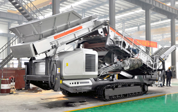

Mobile crusher sale for its flexibility favored by the general customers, recently use in high-speed rail, mines, mining operations, is one crusher machine of the most popular machines in the last stage.
For disposal of construction waste, construction waste crushing, especially in small markets such as construction waste site with special needs, pioneered mobile crusher station combination of devices, based on the integration of units through integrated, convenient disposal of construction waste crushing realization. After sorting through a particular construction waste removal equipment in addition to iron iron material contained therein, by the rough broken, broken, crushed or even dispose of crushing equipment, processed into a certain size of regeneration Aggregates, finally applied to the roadbed stone, unburned brick, cement admixtures and other aspects. We achieved a recycling transportation, construction waste, nor dust pollution, small footprint, high efficiency, energy saving, environmental protection, good results. The research results and products just to fill the gaps in the market of construction waste disposal. Believe that the future will be the domestic construction waste products in the battlefield to accomplish. Because mobile crusher station, city life for the better, neater, faster and faster as the development of science and technology, mobile crushing station will become more and more advanced.
Providing customers with a full range of crushing and screening equipment such as washing tire type mobile crushing plant, crawler mobile crusher, construction waste disposal equipment, hydraulic cone crusher, jaw crusher, impact crusher, vertical impact crusher (sand), circular vibrating screen, vibrating screen, sand washing machine bucket wheel, spiral sand washing machine, vibrating feeder, sand recovery, weight powder separation machine, dryer hammer breaking high product cost at the same time. Serve domestic economic construction, complete sets of equipment have been exported to Russia, Mongolia, Central Asia, East Asia, Africa, Arab and other more than 30 countries and regions.
Construction waste mobile crusher is the world's production of stable, more efficient new environmentally friendly crusher. To promote the country to the international development of mining machinery industry has far-reaching significance. Mobile Crusher machine with excellent technology company mainly known, used my device users know my equipment is more durable than their peers of other manufacturers of equipment, more stable, more efficient, more energy efficient and environmentally friendly. New mobile crusher station once the market has been a lot of new and old customers to buy a phone consultation.
Mobile crusher has been widely used in metallurgy, chemical industry, building materials, utilities and other materials often need to move jobs processing areas, especially for highways, railways, hydropower engineering, construction waste and other stone work flow, the user can process different types of raw materials and finished size requirements using a variety of configurations. Advanced technology structure and convenient mode of operation is Hongxing machine mobile crusher occupies an important force in the market.
Live chat with our professional customer service! Get the quotation list.
Chat Now